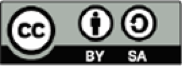

关于 OWASP
Open Worldwide Application Security Project (OWASP) 是一个开放社区，致力于帮助组织开发、采购和维护可信的应用程序与 API。
在 OWASP，你可以免费、开放地获取：
- 应用安全工具和标准
- 前沿研究
- 标准安全控制和库
- 关于应用安全测试、安全代码开发和安全代码审查的完整书籍
- 演示文稿和视频
- 涵盖许多常见主题的速查表
- 在世界各地和线上举办的分会会议
- 活动、培训和大会
- Google Groups
了解更多信息：https://owasp.org。
所有 OWASP 工具、文档、视频、演示文稿和分会都向任何有兴趣改进应用安全的人免费开放。
我们倡导从人员、流程和技术三个方面看待应用安全，因为最有效的应用安全方法需要在这些方面同时改进。
OWASP 是一种不同类型的组织。由于不受商业压力影响，我们能够提供公正、实用且成本可控的应用安全信息。
OWASP 不隶属于任何技术公司，但我们支持在充分了解的前提下使用商业安全技术。OWASP 以协作、透明、开放的方式产出多种资料。
OWASP Foundation 是保障项目长期发展的非营利实体。几乎所有与 OWASP 相关的人都是志愿者，包括 OWASP 董事会、分会负责人、项目负责人和项目成员。我们通过资助和基础设施支持创新性安全研究。
欢迎加入我们！
版权与许可

版权所有 © 2003-2025 The OWASP® Foundation, Inc. 本文档基于 Creative Commons Attribution Share-Alike 4.0 许可发布。任何复用或分发都必须向他人明确说明本作品的许可条款。